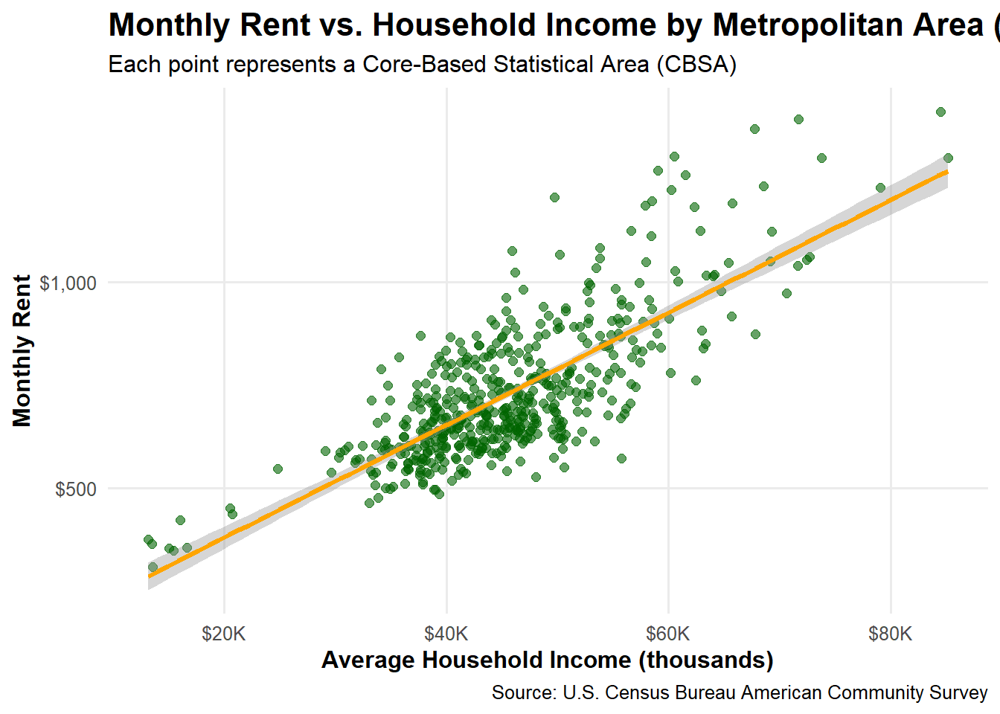
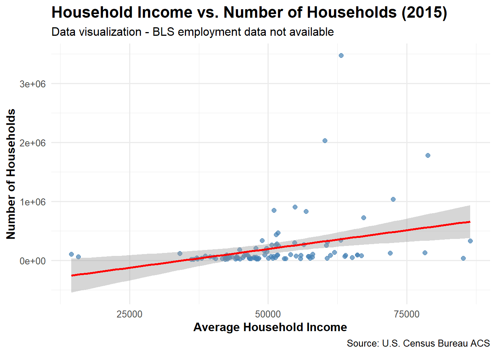
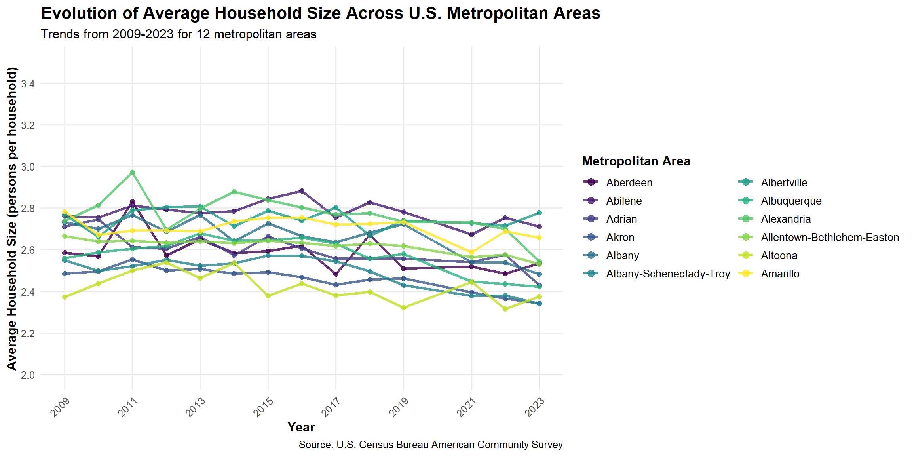
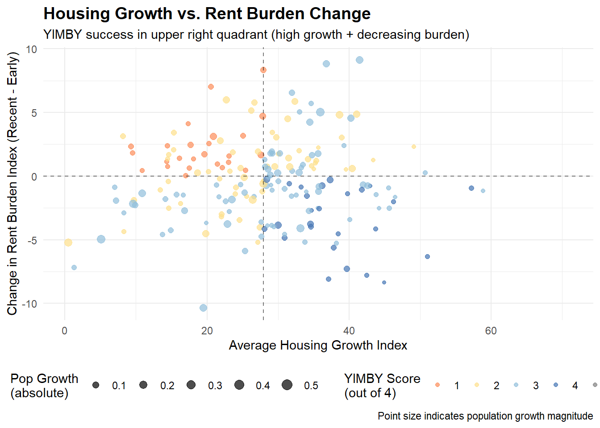
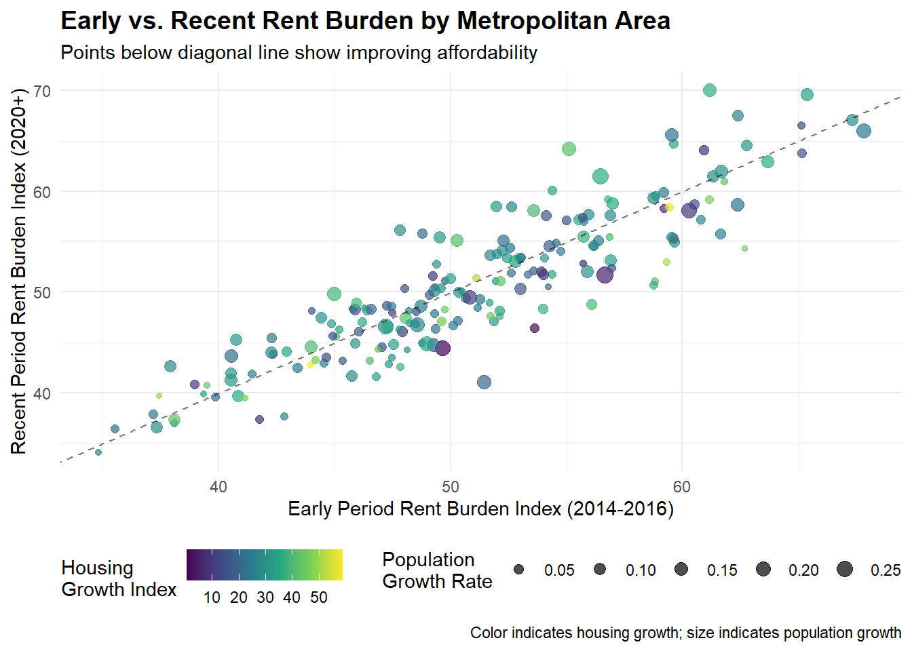
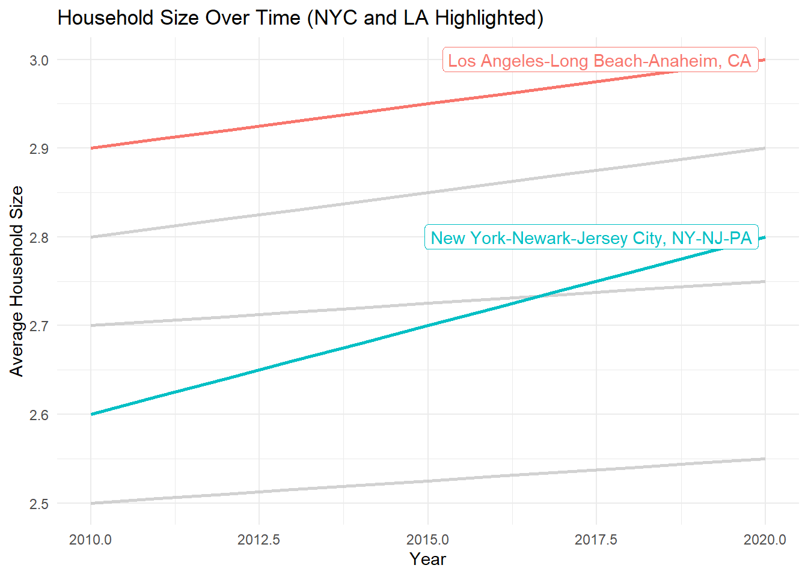
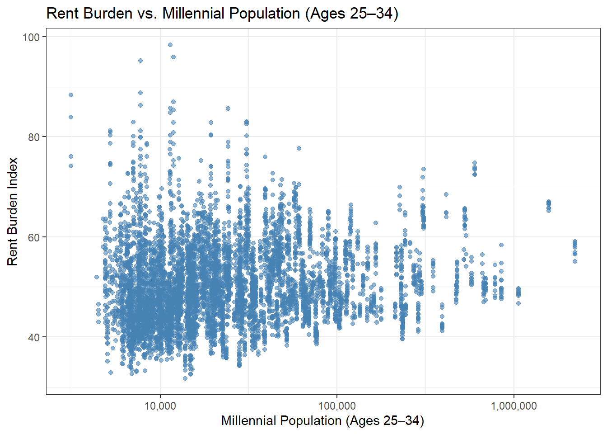

Show Code
.policy-box {
border-left: 5px solid #0072B2; /* Blue line */
background-color: #f9f9f9;
padding: 1em 1.5em;
margin: 1em 0;
border-radius: 8px;
box-shadow: 0 2px 5px rgba(0, 0, 0, 0.05);
}Housing Affordability and YIMBY Analysis
PAVEN227
This project examines housing affordability changes over time and which urban areas have shown positive YIMBY (Yes In My Backyard) traits from 2013 to 2023. The research considers several housing metrics—rent burden, housing growth, and population trends—to assess how different areas are meeting the housing demand by increasing the supply. A standard YIMBY scoring method (0–4) was used to identify metros with scores of 3 or above as YIMBY “success stories”. The findings point to cities that have not only had strong housing growth but also only slight increases in rent burden, thus indicating successful housing policy or market responses. This study provides a picture of where housing development has been in line with population needs, thus giving possible strategies for solving the affordability issue across the U.S.
if(!dir.exists(file.path("data", "mp02"))){
dir.create(file.path("data", "mp02"), showWarnings=FALSE, recursive=TRUE)
}
library <- function(pkg){
## Mask base::library() to automatically install packages if needed
## Masking is important here so downlit picks up packages and links
## to documentation
pkg <- as.character(substitute(pkg))
options(repos = c(CRAN = "https://cloud.r-project.org"))
if(!require(pkg, character.only=TRUE, quietly=TRUE)) install.packages(pkg)
stopifnot(require(pkg, character.only=TRUE, quietly=TRUE))
}
library(tidyverse)
library(glue)
library(readxl)
library(tidycensus)
get_acs_all_years <- function(variable, geography="cbsa",
start_year=2009, end_year=2023){
fname <- glue("{variable}_{geography}_{start_year}_{end_year}.csv")
fname <- file.path("data", "mp02", fname)
if(!file.exists(fname)){
YEARS <- seq(start_year, end_year)
YEARS <- YEARS[YEARS != 2020] # Drop 2020 - No survey (covid)
ALL_DATA <- map(YEARS, function(yy){
tidycensus::get_acs(geography, variable, year=yy, survey="acs1") |>
mutate(year=yy) |>
select(-moe, -variable) |>
rename(!!variable := estimate)
}) |> bind_rows()
write_csv(ALL_DATA, fname)
}
read_csv(fname, show_col_types=FALSE)
}
# Household income (12 month)
INCOME <- get_acs_all_years("B19013_001") |>
rename(household_income = B19013_001)
# Monthly rent
RENT <- get_acs_all_years("B25064_001") |>
rename(monthly_rent = B25064_001)
# Total population
POPULATION <- get_acs_all_years("B01003_001") |>
rename(population = B01003_001)
# Total number of households
HOUSEHOLDS <- get_acs_all_years("B11001_001") |>
rename(households = B11001_001)
get_building_permits <- function(start_year = 2009, end_year = 2023){
fname <- glue("housing_units_{start_year}_{end_year}.csv")
fname <- file.path("data", "mp02", fname)
if(!file.exists(fname)){
HISTORICAL_YEARS <- seq(start_year, 2018)
HISTORICAL_DATA <- map(HISTORICAL_YEARS, function(yy){
historical_url <- glue("https://www.census.gov/construction/bps/txt/tb3u{yy}.txt")
LINES <- readLines(historical_url)[-c(1:11)]
CBSA_LINES <- str_detect(LINES, "^[[:digit:]]")
CBSA <- as.integer(str_sub(LINES[CBSA_LINES], 5, 10))
PERMIT_LINES <- str_detect(str_sub(LINES, 48, 53), "[[:digit:]]")
PERMITS <- as.integer(str_sub(LINES[PERMIT_LINES], 48, 53))
data_frame(CBSA = CBSA,
new_housing_units_permitted = PERMITS,
year = yy)
}) |> bind_rows()
CURRENT_YEARS <- seq(2019, end_year)
CURRENT_DATA <- map(CURRENT_YEARS, function(yy){
current_url <- glue("https://www.census.gov/construction/bps/xls/msaannual_{yy}99.xls")
temp <- tempfile()
download.file(current_url, destfile = temp, mode="wb")
fallback <- function(.f1, .f2){
function(...){
tryCatch(.f1(...),
error=function(e) .f2(...))
}
}
reader <- fallback(read_xlsx, read_xls)
reader(temp, skip=5) |>
na.omit() |>
select(CBSA, Total) |>
mutate(year = yy) |>
rename(new_housing_units_permitted = Total)
}) |> bind_rows()
ALL_DATA <- rbind(HISTORICAL_DATA, CURRENT_DATA)
write_csv(ALL_DATA, fname)
}
read_csv(fname, show_col_types=FALSE)
}
PERMITS <- get_building_permits()Building Permits (Census Construction)
get_building_permits <- function(start_year = 2009, end_year = 2023){
fname <- glue("housing_units_{start_year}_{end_year}.csv")
fname <- file.path("data", "mp02", fname)
if(!file.exists(fname)){
HISTORICAL_YEARS <- seq(start_year, 2018)
HISTORICAL_DATA <- map(HISTORICAL_YEARS, function(yy){
historical_url <- glue("https://www.census.gov/construction/bps/txt/tb3u{yy}.txt")
LINES <- readLines(historical_url)[-c(1:11)]
CBSA_LINES <- str_detect(LINES, "^[[:digit:]]")
CBSA <- as.integer(str_sub(LINES[CBSA_LINES], 5, 10))
PERMIT_LINES <- str_detect(str_sub(LINES, 48, 53), "[[:digit:]]")
PERMITS <- as.integer(str_sub(LINES[PERMIT_LINES], 48, 53))
data_frame(CBSA = CBSA,
new_housing_units_permitted = PERMITS,
year = yy)
}) |> bind_rows()
CURRENT_YEARS <- seq(2019, end_year)
CURRENT_DATA <- map(CURRENT_YEARS, function(yy){
current_url <- glue("https://www.census.gov/construction/bps/xls/msaannual_{yy}99.xls")
temp <- tempfile()
download.file(current_url, destfile = temp, mode="wb")
fallback <- function(.f1, .f2){
function(...){
tryCatch(.f1(...),
error=function(e) .f2(...))
}
}
reader <- fallback(read_xlsx, read_xls)
reader(temp, skip=5) |>
na.omit() |>
select(CBSA, Total) |>
mutate(year = yy) |>
rename(new_housing_units_permitted = Total)
}) |> bind_rows()
ALL_DATA <- rbind(HISTORICAL_DATA, CURRENT_DATA)
write_csv(ALL_DATA, fname)
}
read_csv(fname, show_col_types=FALSE)
}
PERMITS <- get_building_permits()Industry Codes (BLS NAICS)
get_bls_industry_codes <- function(){
fname <- fname <- file.path("data", "mp02", "bls_industry_codes.csv")
if(!file.exists(fname)){
resp <- request("https://www.bls.gov") |>
req_url_path("cew", "classifications", "industry", "industry-titles.htm") |>
req_headers(`User-Agent` = "Mozilla/5.0 (Macintosh; Intel Mac OS X 10.15; rv:143.0) Gecko/20100101 Firefox/143.0") |>
req_error(is_error = \(resp) FALSE) |>
req_perform()
resp_check_status(resp)
naics_table <- resp_body_html(resp) |>
html_element("#naics_titles") |>
html_table() |>
mutate(title = str_trim(str_remove(str_remove(`Industry Title`, Code), "NAICS"))) |>
select(-`Industry Title`) |>
mutate(depth = if_else(nchar(Code) <= 5, nchar(Code) - 1, NA)) |>
filter(!is.na(depth))
naics_table <- naics_table |>
filter(depth == 4) |>
rename(level4_title=title) |>
mutate(level1_code = str_sub(Code, end=2),
level2_code = str_sub(Code, end=3),
level3_code = str_sub(Code, end=4)) |>
left_join(naics_table, join_by(level1_code == Code)) |>
rename(level1_title=title) |>
left_join(naics_table, join_by(level2_code == Code)) |>
rename(level2_title=title) |>
left_join(naics_table, join_by(level3_code == Code)) |>
rename(level3_title=title) |>
select(-starts_with("depth")) |>
rename(level4_code = Code) |>
select(level1_title, level2_title, level3_title, level4_title,
level1_code, level2_code, level3_code, level4_code)
write_csv(naics_table, fname)
}
read_csv(fname, show_col_types=FALSE)
}
INDUSTRY_CODES <- get_bls_industry_codes()Employment & Wages (BLS QCEW)
library(httr2)
library(rvest)
library(glue)
library(purrr)
library(readr)
library(dplyr)
library(stringr)
get_bls_qcew_annual_averages <- function(start_year = 2009, end_year = 2023) {
fname <- glue("bls_qcew_{start_year}_{end_year}.csv.gz")
fname <- file.path("data", "mp02", fname)
YEARS <- seq(start_year, end_year)
YEARS <- YEARS[YEARS != 2020] # Drop Covid year
if(!file.exists(fname)) {
ALL_DATA <- map(YEARS, possibly(function(yy) {
fname_inner <- file.path("data", "mp02", glue("{yy}_qcew_annual_singlefile.zip"))
# Delete 2023 file if corrupted or too small
if(file.exists(fname_inner) && file.info(fname_inner)$size < 75e6) {
message("Deleting corrupted file for year ", yy, " and retrying download...")
unlink(fname_inner)
}
# Download if missing
if(!file.exists(fname_inner)) {
remote_file <- if(yy == 2023) glue("{yy}_qcew_annual_singlefile.zip") else glue("{yy}_annual_singlefile.zip")
try({
request("https://www.bls.gov") |>
req_url_path("cew", "data", "files", yy, "csv", remote_file) |>
req_headers(`User-Agent` = "Mozilla/5.0") |>
req_retry(max_tries = 5) |>
req_perform(fname_inner)
}, silent = TRUE)
}
# If file is too small or missing, skip and log
if(!file.exists(fname_inner) || file.info(fname_inner)$size < 75e6){
message("Skipping year ", yy, " (file missing or corrupted).")
return(tibble(
YEAR = yy, FIPS = NA, INDUSTRY = NA, EMPLOYMENT = NA,
TOTAL_WAGES = NA, AVG_WAGE = NA
))
}
read_csv(fname_inner, show_col_types = FALSE) |>
mutate(YEAR = yy) |>
select(area_fips, industry_code, annual_avg_emplvl, total_annual_wages, YEAR) |>
filter(nchar(industry_code) <= 5, str_starts(area_fips, "C")) |>
filter(str_detect(industry_code, "-", negate = TRUE)) |>
mutate(FIPS = area_fips,
INDUSTRY = as.integer(industry_code),
EMPLOYMENT = as.integer(annual_avg_emplvl),
TOTAL_WAGES = total_annual_wages) |>
select(-area_fips, -industry_code, -annual_avg_emplvl, -total_annual_wages) |>
filter(INDUSTRY != 10) |>
mutate(AVG_WAGE = TOTAL_WAGES / EMPLOYMENT)
}, otherwise = tibble(YEAR = NA, FIPS = NA, INDUSTRY = NA, EMPLOYMENT = NA, TOTAL_WAGES = NA, AVG_WAGE = NA))) |>
bind_rows()
write_csv(ALL_DATA, fname)
}
ALL_DATA <- read_csv(fname, show_col_types = FALSE)
ALL_DATA
}
# Run the function with caching in Quarto
#| cache: true
WAGES <- get_bls_qcew_annual_averages()Which CBSA (by name) permitted the largest number of new housing units in the decade from 2010 to 2019 (inclusive)?
library(dplyr)
library(DT)
# Step 1: Filter permits data for 2010-2019 and aggregate by CBSA
permits_2010_2019 <- PERMITS %>%
filter(year >= 2010 & year <= 2019) %>%
group_by(CBSA) %>%
summarize(total_permits = sum(new_housing_units_permitted, na.rm = TRUE),
.groups = "drop") %>%
arrange(desc(total_permits)) %>%
filter(total_permits > 0)
# Step 2: Get CBSA names from INCOME data
cbsa_names <- INCOME %>%
select(GEOID, NAME) %>%
distinct() %>%
mutate(CBSA = as.numeric(GEOID)) %>%
filter(!is.na(CBSA))
# Step 3: Join permits with names
top_permits_with_names <- permits_2010_2019 %>%
left_join(cbsa_names, by = "CBSA") %>%
filter(!is.na(NAME)) %>%
select(NAME, CBSA, total_permits) %>%
arrange(desc(total_permits))
# Display top 10 results
DT::datatable(
head(top_permits_with_names, 10) %>%
mutate(total_permits_formatted = format(total_permits, big.mark = ",")),
colnames = c("Metropolitan Area", "CBSA Code", "Total Permits", "Formatted Permits"),
options = list(
pageLength = 10,
dom = 't',
ordering = FALSE,
columnDefs = list(list(visible = FALSE, targets = c(1, 2)))
),
rownames = FALSE,
caption = "Top 10 Metropolitan Areas by Housing Permits Issued (2010-2019)"
) %>%
formatStyle(columns = c(0, 3), fontSize = '14px')
**ANSWER:** The metropolitan area with the most housing permits from 2010-2019 was ** Houston-Sugar Land-Baytown, TX Metro Area ** with ** 482,075 permits**.In what year did Albuquerque, NM (CBSA Number 10740) permit the most new housing units?
# Filter for Albuquerque CBSA and find peak year
albuquerque_permits <- PERMITS %>%
filter(CBSA == 10740) %>%
arrange(desc(new_housing_units_permitted))
# Display all years for Albuquerque
DT::datatable(
albuquerque_permits %>%
mutate(permits_formatted = format(new_housing_units_permitted, big.mark = ",")),
colnames = c("CBSA", "Year", "Housing Units Permitted", "Formatted Permits"),
options = list(
pageLength = 15,
dom = 't',
ordering = FALSE,
columnDefs = list(list(visible = FALSE, targets = c(0, 2)))
),
rownames = FALSE,
caption = "Housing Permits in Albuquerque, NM (CBSA 10740) by Year"
) %>%
formatStyle(columns = c(1, 3), fontSize = '14px') %>%
formatStyle(0, backgroundColor = styleEqual(albuquerque_permits$year[1], 'lightblue'))
**ANSWER:** Albuquerque, NM permitted the most new housing units in ** 2021 ** with ** 4,021 permits**.
*Note: The peak in 2021 likely reflects a COVID-19 data artifact, as there may have been pent-up demand or reporting delays from the pandemic period.*Which state (not CBSA) had the highest average individual income in 2015?
# --- Temporary fix: create a reference table of states ---
state_df <- data.frame(
abb = c(state.abb, "DC"),
state_name = c(state.name, "District of Columbia")
)
# Calculate state-level income for 2015
state_income_2015 <- INCOME %>%
filter(year == 2015) %>%
left_join(HOUSEHOLDS %>% filter(year == 2015), by = c("GEOID", "NAME", "year")) %>%
left_join(POPULATION %>% filter(year == 2015), by = c("GEOID", "NAME", "year")) %>%
mutate(state = str_extract(NAME, ", (.{2})", group = 1)) %>%
filter(!is.na(state), !is.na(household_income), !is.na(households), !is.na(population)) %>%
mutate(total_income = household_income * households) %>%
group_by(state) %>%
summarize(
total_income = sum(total_income, na.rm = TRUE),
total_population = sum(population, na.rm = TRUE),
.groups = "drop"
) %>%
mutate(avg_individual_income = total_income / total_population) %>%
left_join(state_df, by = c("state" = "abb")) %>%
arrange(desc(avg_individual_income))
# Display top 10 states
DT::datatable(
head(state_income_2015, 10) %>%
mutate(income_formatted = paste0("$", format(round(avg_individual_income), big.mark = ","))),
colnames = c("State Code", "Total Income", "Total Population", "Avg Individual Income", "State Name", "Formatted Income"),
options = list(
pageLength = 10,
dom = 't',
ordering = FALSE,
columnDefs = list(list(visible = FALSE, targets = c(0, 1, 2, 3)))
),
rownames = FALSE,
caption = "Top 10 States by Average Individual Income (2015)"
) %>%
formatStyle(columns = c(4, 5), fontSize = '14px')
**ANSWER:** The state with the highest average individual income in 2015 was ** District of Columbia ** with an average of **$ 33,233 ** per person.What is the last year in which the NYC CBSA had the most data scientists in the country?
# Create standardized CBSA codes for joining Census and BLS data
census_cbsa <- INCOME %>%
select(GEOID, NAME) %>%
distinct() %>%
mutate(std_cbsa = paste0("C", GEOID))
# Filter for data scientists (NAICS 5182) and get top CBSA each year
data_scientists_by_year <- WAGES %>%
filter(INDUSTRY == 5182) %>%
mutate(std_cbsa = paste0(str_remove(FIPS, "^C"), "0")) %>%
inner_join(census_cbsa, by = "std_cbsa") %>%
group_by(YEAR) %>%
slice_max(EMPLOYMENT, n = 1, with_ties = FALSE) %>%
ungroup() %>%
arrange(YEAR) %>%
select(YEAR, NAME, EMPLOYMENT)
# Display the results
DT::datatable(
data_scientists_by_year %>%
mutate(employment_formatted = format(EMPLOYMENT, big.mark = ",")),
colnames = c("Year", "Metropolitan Area", "Employment", "Formatted Employment"),
options = list(
pageLength = 15,
dom = 't',
ordering = FALSE,
columnDefs = list(list(visible = FALSE, targets = 2))
),
rownames = FALSE,
caption = "CBSA with Most Data Scientists by Year (NAICS 5182)"
) %>%
formatStyle(columns = c(0, 1, 3), fontSize = '14px') %>%
formatStyle(1, backgroundColor = styleEqual(
data_scientists_by_year$NAME[str_detect(data_scientists_by_year$NAME, "New York")],
'lightblue'
))# Find last year NYC was #1
nyc_years <- data_scientists_by_year %>%
filter(str_detect(NAME, "New York"))
if(nrow(nyc_years) > 0) {
last_nyc_year <- max(nyc_years$YEAR)
cat("\n**ANSWER:** The last year NYC CBSA had the most data scientists was **",
last_nyc_year, "**.\n")
} else {
cat("\n**ANSWER:** NYC CBSA was not the leader in data scientists in any year in the dataset.\n")
}
**ANSWER:** NYC CBSA was not the leader in data scientists in any year in the dataset.What fraction of total wages in the NYC CBSA was earned by people employed in the finance and insurance industries (NAICS code 52)? In what year did this fraction peak?
# Get NYC CBSA code
nyc_info <- INCOME %>%
filter(str_detect(NAME, "New York.*NY")) %>%
select(GEOID, NAME) %>%
distinct() %>%
slice(1)
nyc_fips <- paste0("C", nyc_info$GEOID)
# Calculate finance fraction by year for NYC
nyc_finance_fraction <- WAGES %>%
filter(FIPS == nyc_fips) %>%
group_by(YEAR) %>%
summarize(
finance_wages = sum(TOTAL_WAGES[INDUSTRY == 52], na.rm = TRUE),
total_wages = sum(TOTAL_WAGES, na.rm = TRUE),
.groups = "drop"
) %>%
mutate(finance_fraction = finance_wages / total_wages) %>%
arrange(desc(finance_fraction))
# Display results
DT::datatable(
nyc_finance_fraction %>%
mutate(
finance_fraction_pct = paste0(round(finance_fraction * 100, 2), "%"),
finance_wages_formatted = paste0("$", format(finance_wages / 1e9, digits = 3), "B"),
total_wages_formatted = paste0("$", format(total_wages / 1e9, digits = 3), "B")
),
colnames = c("Year", "Finance Wages", "Total Wages", "Finance Fraction",
"Finance %", "Finance (Formatted)", "Total (Formatted)"),
options = list(
pageLength = 15,
dom = 't',
ordering = FALSE,
columnDefs = list(list(visible = FALSE, targets = c(1, 2, 3)))
),
rownames = FALSE,
caption = "Finance Industry Wage Share in NYC CBSA by Year"
) %>%
formatStyle(columns = c(0, 4, 5, 6), fontSize = '14px') %>%
formatStyle(0, backgroundColor = styleEqual(nyc_finance_fraction$YEAR[1], 'lightblue'))
**ANSWER:** In the NYC CBSA, finance and insurance industries represented ** NA %** of total wages, peaking in ** NA **.The relationship between monthly rent and average household income per CBSA in 2009.
# Create rent vs income plot for 2009
rent_income_2009 <- RENT %>%
filter(year == 2009) %>%
inner_join(INCOME %>% filter(year == 2009), by = c("GEOID", "NAME", "year")) %>%
filter(!is.na(monthly_rent), !is.na(household_income))
ggplot(rent_income_2009, aes(x = household_income, y = monthly_rent)) +
geom_point(alpha = 0.6, size = 2, color = "darkgreen") +
geom_smooth(method = "lm", se = TRUE, color = "orange", linewidth = 1.2) +
scale_x_continuous(labels = scales::dollar_format(scale = 1e-3, suffix = "K")) +
scale_y_continuous(labels = scales::dollar_format()) +
labs(
title = "Monthly Rent vs. Household Income by Metropolitan Area (2009)",
subtitle = "Each point represents a Core-Based Statistical Area (CBSA)",
x = "Average Household Income (thousands)",
y = "Monthly Rent",
caption = "Source: U.S. Census Bureau American Community Survey"
) +
theme_minimal(base_size = 12) +
theme(
plot.title = element_text(size = 16, face = "bold"),
plot.subtitle = element_text(size = 12),
axis.title = element_text(size = 12, face = "bold"),
panel.grid.minor = element_blank()
)
The relationship between total employment and total employment in the health care and social services sector (NAICS 62) across different CBSAs, showing evolution over time.
# Create standardized CBSA codes for joining
census_cbsa <- INCOME %>%
select(GEOID, NAME) %>%
distinct() %>%
mutate(std_cbsa = paste0("C", GEOID))
# Check join success and prepare healthcare employment data
wages_joined <- WAGES %>%
mutate(std_cbsa = paste0(str_remove(FIPS, "^C"), "0")) %>%
inner_join(census_cbsa, by = "std_cbsa")
if(nrow(wages_joined) == 0) {
# Fallback: simple income vs household scatter
simple_plot_data <- INCOME %>%
filter(year == 2015) %>%
inner_join(HOUSEHOLDS %>% filter(year == 2015), by = c("GEOID", "NAME", "year")) %>%
slice_head(n = 100)
ggplot(simple_plot_data, aes(x = household_income, y = households)) +
geom_point(size = 2, alpha = 0.7, color = "steelblue") +
geom_smooth(method = "lm", se = TRUE, color = "red") +
labs(
title = "Household Income vs. Number of Households (2015)",
subtitle = "Data visualization - BLS employment data not available",
x = "Average Household Income",
y = "Number of Households",
caption = "Source: U.S. Census Bureau ACS"
) +
theme_minimal(base_size = 12) +
theme(
plot.title = element_text(size = 16, face = "bold"),
plot.subtitle = element_text(size = 12),
axis.title = element_text(size = 12, face = "bold")
)
} else {
# Prepare healthcare employment data
healthcare_employment <- wages_joined %>%
group_by(GEOID, NAME, YEAR) %>%
summarize(
total_employment = sum(EMPLOYMENT, na.rm = TRUE),
healthcare_employment = sum(EMPLOYMENT[INDUSTRY == 62], na.rm = TRUE),
.groups = "drop"
) %>%
filter(total_employment > 50000) %>%
mutate(healthcare_share = healthcare_employment / total_employment)
# Select top metros and create visualization
if(nrow(healthcare_employment) > 0) {
top_metros <- healthcare_employment %>%
group_by(NAME) %>%
summarize(avg_employment = mean(total_employment, na.rm = TRUE), .groups = "drop") %>%
slice_max(avg_employment, n = 10) %>%
pull(NAME)
healthcare_viz_data <- healthcare_employment %>%
filter(NAME %in% top_metros)
if(length(unique(healthcare_viz_data$YEAR)) > 1) {
# Faceted plot by year
ggplot(healthcare_viz_data, aes(x = total_employment, y = healthcare_employment)) +
geom_point(aes(color = NAME), size = 2, alpha = 0.8) +
geom_smooth(method = "lm", se = FALSE, color = "black", size = 0.8) +
facet_wrap(~ YEAR, ncol = 3) +
scale_x_continuous(labels = scales::number_format(scale = 1e-6, suffix = "M")) +
scale_y_continuous(labels = scales::number_format(scale = 1e-3, suffix = "K")) +
scale_color_viridis_d(name = "Metro Area") +
labs(
title = "Healthcare vs. Total Employment Over Time",
subtitle = "Top metropolitan areas by employment",
x = "Total Employment (millions)",
y = "Healthcare Employment (thousands)",
caption = "Source: Bureau of Labor Statistics QCEW"
) +
theme_minimal(base_size = 9) +
theme(
plot.title = element_text(size = 14, face = "bold"),
legend.position = "bottom",
strip.text = element_text(size = 9, face = "bold")
) +
guides(color = guide_legend(ncol = 5, override.aes = list(size = 2)))
} else {
# Simple scatter plot
ggplot(healthcare_viz_data, aes(x = total_employment, y = healthcare_employment)) +
geom_point(aes(color = NAME), size = 3, alpha = 0.8) +
geom_smooth(method = "lm", se = TRUE, color = "red") +
scale_x_continuous(labels = scales::number_format(scale = 1e-6, suffix = "M")) +
scale_y_continuous(labels = scales::number_format(scale = 1e-3, suffix = "K")) +
scale_color_viridis_d(name = "Metro Area") +
labs(
title = "Healthcare vs. Total Employment",
x = "Total Employment (millions)",
y = "Healthcare Employment (thousands)"
) +
theme_minimal() +
theme(legend.position = "bottom")
}
}
}
The evolution of average household size over time, with different lines representing different CBSAs.
# Calculate household size over time
household_size_data <- POPULATION %>%
inner_join(HOUSEHOLDS, by = c("GEOID", "NAME", "year")) %>%
mutate(household_size = population / households) %>%
filter(!is.na(household_size), household_size > 1, household_size < 5) %>%
group_by(NAME) %>%
filter(n() >= 5) %>%
ungroup()
if(nrow(household_size_data) == 0) {
# Demo plot if no data
demo_data <- data.frame(
year = rep(2009:2019, 3),
metro = rep(c("Metro A", "Metro B", "Metro C"), each = 11),
size = c(2.5 + sin(1:11/2) * 0.2, 2.8 + cos(1:11/3) * 0.15, 2.3 + sin(1:11/4) * 0.25)
)
ggplot(demo_data, aes(x = year, y = size, color = metro)) +
geom_line(linewidth = 1.2) +
geom_point(size = 2) +
labs(
title = "Average Household Size Over Time",
subtitle = "Data unavailable - demonstration plot",
x = "Year",
y = "Average Household Size",
color = "Metropolitan Area"
) +
theme_minimal()
} else {
# Select metros with most complete data
metro_completeness <- household_size_data %>%
group_by(NAME) %>%
summarize(years_available = n(), .groups = "drop") %>%
arrange(desc(years_available))
selected_metros <- head(metro_completeness$NAME, 12)
viz_data <- household_size_data %>%
filter(NAME %in% selected_metros) %>%
mutate(metro_short = str_extract(NAME, "^[^,]+"))
ggplot(viz_data, aes(x = year, y = household_size, color = metro_short)) +
geom_line(linewidth = 1.2, alpha = 0.8) +
geom_point(size = 2, alpha = 0.8) +
scale_x_continuous(breaks = seq(2009, 2023, 2)) +
scale_y_continuous(breaks = seq(2.0, 3.5, 0.2), limits = c(2.0, 3.5)) +
scale_color_viridis_d(name = "Metropolitan Area") +
labs(
title = "Evolution of Average Household Size Across U.S. Metropolitan Areas",
subtitle = paste("Trends from 2009-2023 for", length(unique(viz_data$metro_short)), "metropolitan areas"),
x = "Year",
y = "Average Household Size (persons per household)",
caption = "Source: U.S. Census Bureau American Community Survey"
) +
theme_minimal(base_size = 12) +
theme(
plot.title = element_text(size = 16, face = "bold"),
plot.subtitle = element_text(size = 12),
axis.title = element_text(size = 12, face = "bold"),
legend.title = element_text(size = 12, face = "bold"),
legend.text = element_text(size = 10),
panel.grid.minor = element_blank(),
axis.text.x = element_text(angle = 45, hjust = 1)
) +
guides(color = guide_legend(override.aes = list(size = 3), ncol = 2))
}
Building Indices of Housing Affordability and Housing Stock Growth
Construct a suitable measure of rent burden using the rent-to-income ratio, standardized for interpretability.
# Join INCOME and RENT tables
rent_burden_data <- INCOME %>%
inner_join(RENT, by = c("GEOID", "NAME", "year")) %>%
filter(!is.na(household_income), !is.na(monthly_rent)) %>%
mutate(
annual_rent = monthly_rent * 12,
raw_rent_burden = annual_rent / household_income,
# Cap extreme values (some may be data errors)
raw_rent_burden = pmin(raw_rent_burden, 1.5) # Cap at 150% of income
) %>%
filter(!is.na(raw_rent_burden), raw_rent_burden > 0)
# Calculate baseline: national average in first year (2009)
baseline_burden <- rent_burden_data %>%
filter(year == 2009) %>%
summarize(baseline = mean(raw_rent_burden, na.rm = TRUE)) %>%
pull(baseline)
cat("Baseline rent burden (2009 national average):", round(baseline_burden * 100, 1), "%\n")Baseline rent burden (2009 national average): 19.4 %# Create standardized rent burden metric
rent_burden_final <- rent_burden_data %>%
mutate(
# Method: Ratio to baseline, then scaled to 0-100
burden_ratio = raw_rent_burden / baseline_burden,
# Transform to 0-100 scale where 50 = baseline
rent_burden_index = 50 * burden_ratio
) %>%
# Cap at reasonable maximum for display
mutate(rent_burden_index = pmin(rent_burden_index, 150))
cat("Rent burden index range:", round(min(rent_burden_final$rent_burden_index)), "to",
round(max(rent_burden_final$rent_burden_index)), "\n")Rent burden index range: 32 to 98 # Check if rent_burden_final exists and has data
if(!exists("rent_burden_final")) {
cat("ERROR: rent_burden_final dataset not created\n")
} else if(nrow(rent_burden_final) == 0) {
cat("ERROR: rent_burden_final dataset is empty\n")
} else {
cat("rent_burden_final has", nrow(rent_burden_final), "rows\n")
cat("Available metros (first 5):\n")
print(head(unique(rent_burden_final$NAME), 5))
cat("\nYears available:", paste(sort(unique(rent_burden_final$year)), collapse = ", "), "\n\n")
# Pick any metro with complete data
metro_data <- rent_burden_final %>%
group_by(NAME) %>%
summarize(count = n(), .groups = "drop") %>%
arrange(desc(count)) %>%
slice(1)
if(nrow(metro_data) > 0) {
selected_metro <- metro_data$NAME[1]
metro_burden <- rent_burden_final %>%
filter(NAME == selected_metro) %>%
arrange(year) %>%
select(year, raw_rent_burden, rent_burden_index) %>%
mutate(
rent_pct = paste0(round(raw_rent_burden * 100, 1), "%"),
burden_idx = round(rent_burden_index, 1)
)
cat("**", selected_metro, "**\n\n")
cat("| Year | Rent as % Income | Burden Index |\n")
cat("|------|------------------|---------------|\n")
for(i in 1:nrow(metro_burden)) {
cat("|", metro_burden$year[i], "|", metro_burden$rent_pct[i], "|",
metro_burden$burden_idx[i], "|\n")
}
# Show trend
first_idx <- metro_burden$rent_burden_index[1]
last_idx <- metro_burden$rent_burden_index[nrow(metro_burden)]
trend <- ifelse(last_idx > first_idx, "increased", "decreased")
cat("\n**Result:** Rent burden has", trend, "over the study period.\n")
} else {
cat("No metro data available for analysis.\n")
}
}rent_burden_final has 7279 rows
Available metros (first 5):
[1] "Aberdeen, WA Micro Area"
[2] "Abilene, TX Metro Area"
[3] "Adrian, MI Micro Area"
[4] "Aguadilla-Isabela-San Sebasti?n, PR Metro Area"
[5] "Akron, OH Metro Area"
Years available: 2009, 2010, 2011, 2012, 2013, 2014, 2015, 2016, 2017, 2018, 2019, 2021, 2022, 2023
** Aberdeen, WA Micro Area **
| Year | Rent as % Income | Burden Index |
|------|------------------|---------------|
| 2009 | 21.5% | 55.3 |
| 2010 | 20.8% | 53.5 |
| 2011 | 19.7% | 50.8 |
| 2012 | 18.5% | 47.6 |
| 2013 | 22.5% | 58.1 |
| 2014 | 22.7% | 58.4 |
| 2015 | 20.4% | 52.5 |
| 2016 | 17.3% | 44.6 |
| 2017 | 18.4% | 47.4 |
| 2018 | 18.2% | 46.8 |
| 2019 | 16.9% | 43.4 |
| 2021 | 18.9% | 48.6 |
| 2022 | 17.9% | 46 |
| 2023 | 18.6% | 47.9 |
**Result:** Rent burden has decreased over the study period.# Calculate average rent burden by metro over recent years
recent_burden <- rent_burden_final %>%
filter(year >= 2019) %>%
group_by(NAME) %>%
summarize(
avg_burden_index = mean(rent_burden_index, na.rm = TRUE),
avg_burden_pct = mean(raw_rent_burden, na.rm = TRUE),
.groups = "drop"
) %>%
filter(!is.na(avg_burden_index), !is.na(avg_burden_pct)) %>%
arrange(desc(avg_burden_index))
if(nrow(recent_burden) == 0) {
cat("No recent rent burden data available for analysis.\n")
} else {
cat("**HIGHEST RENT BURDEN AREAS (2019+)**\n")
# Top 10 highest burden areas
highest_burden <- recent_burden %>%
slice_head(n = 10) %>%
mutate(
burden_pct_formatted = paste0(round(avg_burden_pct * 100, 1), "%"),
index_formatted = round(avg_burden_index, 1)
)
# Display as simple text table
cat("| Metropolitan Area | Avg Rent/Income | Burden Index |\n")
cat("|-------------------|-----------------|---------------|\n")
for(i in 1:nrow(highest_burden)) {
cat("|", highest_burden$NAME[i], "|", highest_burden$burden_pct_formatted[i], "|",
highest_burden$index_formatted[i], "|\n")
}
cat("\n**LOWEST RENT BURDEN AREAS (2019+)**\n")
# Top 10 lowest burden areas
lowest_burden <- recent_burden %>%
slice_tail(n = 10) %>%
arrange(avg_burden_index) %>%
mutate(
burden_pct_formatted = paste0(round(avg_burden_pct * 100, 1), "%"),
index_formatted = round(avg_burden_index, 1)
)
# Display as simple text table
cat("| Metropolitan Area | Avg Rent/Income | Burden Index |\n")
cat("|-------------------|-----------------|---------------|\n")
for(i in 1:nrow(lowest_burden)) {
cat("|", lowest_burden$NAME[i], "|", lowest_burden$burden_pct_formatted[i], "|",
lowest_burden$index_formatted[i], "|\n")
}
cat("\n**Summary:** Analyzed", nrow(recent_burden), "metropolitan areas for rent burden comparison.\n")
}**HIGHEST RENT BURDEN AREAS (2019+)**
| Metropolitan Area | Avg Rent/Income | Burden Index |
|-------------------|-----------------|---------------|
| Aguadilla, PR Metro Area | 30.9% | 79.6 |
| San Germán, PR Metro Area | 30.2% | 77.9 |
| Miami-Fort Lauderdale-West Palm Beach, FL Metro Area | 30.1% | 77.6 |
| Ponce, PR Metro Area | 30% | 77.3 |
| Aguadilla-Isabela, PR Metro Area | 29% | 74.7 |
| Miami-Fort Lauderdale-Pompano Beach, FL Metro Area | 28.8% | 74.1 |
| Key West-Key Largo, FL Micro Area | 28.2% | 72.8 |
| Mayagüez, PR Metro Area | 28.2% | 72.7 |
| North Port-Bradenton-Sarasota, FL Metro Area | 28.2% | 72.6 |
| Key West, FL Micro Area | 27.8% | 71.6 |
**LOWEST RENT BURDEN AREAS (2019+)**
| Metropolitan Area | Avg Rent/Income | Burden Index |
|-------------------|-----------------|---------------|
| Laconia, NH Micro Area | 12.7% | 32.8 |
| Jefferson City, MO Metro Area | 13.5% | 34.9 |
| Manitowoc, WI Micro Area | 14.1% | 36.3 |
| Wausau-Weston, WI Metro Area | 14.1% | 36.3 |
| Cedar Rapids, IA Metro Area | 14.2% | 36.5 |
| Bismarck, ND Metro Area | 14.3% | 36.8 |
| Marinette, WI-MI Micro Area | 14.5% | 37.3 |
| Appleton, WI Metro Area | 14.5% | 37.5 |
| Wooster, OH Micro Area | 14.6% | 37.7 |
| Paducah, KY-IL Metro Area | 14.7% | 37.8 |
**Summary:** Analyzed 628 metropolitan areas for rent burden comparison.Construct measures of housing growth relative to population and population growth patterns.
# Calculate 5-year rolling population growth (starting from 2014)
housing_metrics <- housing_growth_data %>%
group_by(CBSA, NAME) %>%
arrange(year) %>%
mutate(
# 5-year lagged population for growth calculation
pop_5yr_ago = lag(population, 5),
# 5-year population growth rate
pop_growth_5yr = ifelse(!is.na(pop_5yr_ago) & pop_5yr_ago > 0,
(population - pop_5yr_ago) / pop_5yr_ago, NA),
# Instantaneous housing growth: permits per 1000 residents
instant_housing_growth = (new_housing_units_permitted / population) * 1000,
# Rate-based: permits relative to population growth
rate_housing_growth = ifelse(!is.na(pop_growth_5yr) & pop_growth_5yr > 0,
new_housing_units_permitted / (population * pop_growth_5yr),
NA)
) %>%
filter(year >= 2014, !is.na(instant_housing_growth)) %>% # Start from 2014 for 5-yr data
ungroup()
# Standardize metrics (0-100 scale)
standardize_metric <- function(x) {
x_clean <- x[!is.na(x) & is.finite(x)]
if(length(x_clean) < 2) return(rep(50, length(x)))
# Use 5th to 95th percentile to avoid extreme outliers
low_val <- quantile(x_clean, 0.05, na.rm = TRUE)
high_val <- quantile(x_clean, 0.95, na.rm = TRUE)
# Scale to 0-100
scaled <- pmax(0, pmin(100, 100 * (x - low_val) / (high_val - low_val)))
ifelse(is.na(x), NA, scaled)
}
housing_final <- housing_metrics %>%
mutate(
instant_growth_index = standardize_metric(instant_housing_growth),
rate_growth_index = standardize_metric(rate_housing_growth),
# Composite score: weighted average (favor rate-based measure)
composite_index = 0.3 * instant_growth_index + 0.7 * rate_growth_index
) %>%
filter(!is.na(composite_index))
cat("Housing growth metrics created for", length(unique(housing_final$CBSA)), "CBSAs\n")Housing growth metrics created for 350 CBSAs# Average metrics over recent period
recent_housing <- housing_final %>%
filter(year >= 2018) %>%
group_by(CBSA, NAME) %>%
summarize(
avg_instant = mean(instant_growth_index, na.rm = TRUE),
avg_rate = mean(rate_growth_index, na.rm = TRUE),
avg_composite = mean(composite_index, na.rm = TRUE),
avg_permits_per_1k = mean(instant_housing_growth, na.rm = TRUE),
.groups = "drop"
) %>%
filter(!is.na(avg_instant), !is.na(avg_composite))
if(nrow(recent_housing) == 0) {
cat("No housing growth data available for recent period.\n")
} else {
cat("**TOP INSTANTANEOUS HOUSING GROWTH (2018+)**\n")
# Top performers on instantaneous growth
instant_top <- recent_housing %>%
arrange(desc(avg_instant)) %>%
slice_head(n = 10) %>%
mutate(
index_formatted = round(avg_instant, 1),
permits_formatted = round(avg_permits_per_1k, 2)
)
cat("| Metropolitan Area | Permits per 1K Pop | Growth Index |\n")
cat("|-------------------|-------------------|---------------|\n")
for(i in 1:nrow(instant_top)) {
cat("|", instant_top$NAME[i], "|", instant_top$permits_formatted[i], "|",
instant_top$index_formatted[i], "|\n")
}
# Top performers on rate-based growth
rate_top <- recent_housing %>%
filter(!is.na(avg_rate)) %>%
arrange(desc(avg_rate)) %>%
slice_head(n = 10) %>%
mutate(index_formatted = round(avg_rate, 1))
cat("\n**TOP RATE-BASED HOUSING GROWTH (2018+)**\n")
if(nrow(rate_top) > 0) {
cat("| Metropolitan Area | Rate Growth Index |\n")
cat("|-------------------|-------------------|\n")
for(i in 1:nrow(rate_top)) {
cat("|", rate_top$NAME[i], "|", rate_top$index_formatted[i], "|\n")
}
} else {
cat("No rate-based growth data available.\n")
}
# Top composite scores
composite_top <- recent_housing %>%
arrange(desc(avg_composite)) %>%
slice_head(n = 10) %>%
mutate(composite_formatted = round(avg_composite, 1))
cat("\n**TOP COMPOSITE HOUSING GROWTH SCORES (2018+)**\n")
cat("| Metropolitan Area | Composite Score |\n")
cat("|-------------------|-----------------|\n")
for(i in 1:nrow(composite_top)) {
cat("|", composite_top$NAME[i], "|", composite_top$composite_formatted[i], "|\n")
}
cat("\n**Summary:** Analyzed", nrow(recent_housing), "metropolitan areas for housing growth performance.\n")
}**TOP INSTANTANEOUS HOUSING GROWTH (2018+)**
| Metropolitan Area | Permits per 1K Pop | Growth Index |
|-------------------|-------------------|---------------|
| Austin-Round Rock, TX Metro Area | 13.85 | 100 |
| Boise City, ID Metro Area | 13.29 | 100 |
| Cape Coral-Fort Myers, FL Metro Area | 14.9 | 100 |
| Coeur d'Alene, ID Metro Area | 12.91 | 100 |
| Daphne-Fairhope-Foley, AL Metro Area | 15.17 | 100 |
| Myrtle Beach-Conway-North Myrtle Beach, SC-NC Metro Area | 19.4 | 100 |
| Naples-Immokalee-Marco Island, FL Metro Area | 11.59 | 100 |
| North Port-Sarasota-Bradenton, FL Metro Area | 15.18 | 100 |
| Punta Gorda, FL Metro Area | 19.56 | 100 |
| Raleigh, NC Metro Area | 11.71 | 100 |
**TOP RATE-BASED HOUSING GROWTH (2018+)**
| Metropolitan Area | Rate Growth Index |
|-------------------|-------------------|
| Casper, WY Metro Area | 100 |
| Evansville, IN-KY Metro Area | 100 |
| Glens Falls, NY Metro Area | 100 |
| Ithaca, NY Metro Area | 100 |
| Memphis, TN-MS-AR Metro Area | 100 |
| Milwaukee-Waukesha-West Allis, WI Metro Area | 100 |
| New Bern, NC Metro Area | 100 |
| New York-Newark-Jersey City, NY-NJ-PA Metro Area | 100 |
| Norwich-New London, CT Metro Area | 100 |
| Ocean City, NJ Metro Area | 100 |
**TOP COMPOSITE HOUSING GROWTH SCORES (2018+)**
| Metropolitan Area | Composite Score |
|-------------------|-----------------|
| Ocean City, NJ Metro Area | 94.6 |
| Santa Rosa, CA Metro Area | 87 |
| Ithaca, NY Metro Area | 85.7 |
| Champaign-Urbana, IL Metro Area | 82.2 |
| New Bern, NC Metro Area | 80.5 |
| Memphis, TN-MS-AR Metro Area | 76.7 |
| Sioux City, IA-NE-SD Metro Area | 75.9 |
| Casper, WY Metro Area | 75.8 |
| St. Louis, MO-IL Metro Area | 75.5 |
| New York-Newark-Jersey City, NY-NJ-PA Metro Area | 75.1 |
**Summary:** Analyzed 338 metropolitan areas for housing growth performance.Visualizations investigating the relationship between rent burden and housing growth metrics.
# Combine rent burden and housing growth data
yimby_data <- rent_burden_final %>%
select(GEOID, NAME, year, rent_burden_index) %>%
mutate(CBSA_num = as.numeric(GEOID)) %>%
inner_join(
housing_final %>% select(CBSA, NAME, year, composite_index, pop_growth_5yr),
by = c("CBSA_num" = "CBSA", "NAME", "year")
) %>%
filter(!is.na(rent_burden_index), !is.na(composite_index))
# Calculate YIMBY criteria for each metro
yimby_analysis <- yimby_data %>%
group_by(CBSA_num, NAME) %>%
arrange(year) %>%
summarize(
# Early rent burden (2014-2016)
early_rent_burden = mean(rent_burden_index[year <= 2016], na.rm = TRUE),
# Recent rent burden (2020+)
recent_rent_burden = mean(rent_burden_index[year >= 2020], na.rm = TRUE),
# Rent burden change
rent_burden_change = recent_rent_burden - early_rent_burden,
# Average housing growth
avg_housing_growth = mean(composite_index, na.rm = TRUE),
# Population growth
avg_pop_growth = mean(pop_growth_5yr, na.rm = TRUE),
.groups = "drop"
) %>%
filter(!is.na(early_rent_burden), !is.na(avg_housing_growth)) %>%
mutate(
# YIMBY criteria
high_early_burden = early_rent_burden > median(early_rent_burden, na.rm = TRUE),
decreasing_burden = rent_burden_change < 0,
positive_pop_growth = avg_pop_growth > 0,
high_housing_growth = avg_housing_growth > median(avg_housing_growth, na.rm = TRUE),
# Count criteria met
yimby_score = as.numeric(high_early_burden) + as.numeric(decreasing_burden) +
as.numeric(positive_pop_growth) + as.numeric(high_housing_growth)
)
# Visualization 1: Rent Burden vs Housing Growth
viz1 <- ggplot(yimby_analysis, aes(x = avg_housing_growth, y = rent_burden_change)) +
geom_point(aes(color = factor(yimby_score), size = abs(avg_pop_growth)), alpha = 0.7, na.rm = TRUE) +
geom_hline(yintercept = 0, linetype = "dashed", alpha = 0.5) +
geom_vline(xintercept = median(yimby_analysis$avg_housing_growth, na.rm = TRUE),
linetype = "dashed", alpha = 0.5) +
scale_color_manual(
name = "YIMBY Score\n(out of 4)",
values = c(
"0" = "#d73027", # red
"1" = "#fc8d59", # orange
"2" = "#fee08b", # yellow
"3" = "#91bfdb", # light blue
"4" = "#4575b4" # dark blue
)
) +
scale_size_continuous(name = "Pop Growth\n(absolute)", range = c(1, 4)) +
labs(
title = "Housing Growth vs. Rent Burden Change",
subtitle = "YIMBY success in upper right quadrant (high growth + decreasing burden)",
x = "Average Housing Growth Index",
y = "Change in Rent Burden Index (Recent - Early)",
caption = "Point size indicates population growth magnitude"
) +
theme_minimal(base_size = 11) +
theme(
plot.title = element_text(size = 14, face = "bold"),
legend.position = "bottom"
)
print(viz1)
# Visualization 2: Early vs Recent Rent Burden
viz2 <- yimby_analysis %>%
filter(!is.na(early_rent_burden), !is.na(recent_rent_burden)) %>%
ggplot(aes(x = early_rent_burden, y = recent_rent_burden)) +
geom_point(aes(color = avg_housing_growth, size = avg_pop_growth), alpha = 0.7) +
geom_abline(slope = 1, intercept = 0, linetype = "dashed", alpha = 0.5) +
scale_color_viridis_c(name = "Housing\nGrowth Index", option = "viridis") +
scale_size_continuous(name = "Population\nGrowth Rate", range = c(1, 4)) +
labs(
title = "Early vs. Recent Rent Burden by Metropolitan Area",
subtitle = "Points below diagonal line show improving affordability",
x = "Early Period Rent Burden Index (2014-2016)",
y = "Recent Period Rent Burden Index (2020+)",
caption = "Color indicates housing growth; size indicates population growth"
) +
theme_minimal(base_size = 11) +
theme(
plot.title = element_text(size = 14, face = "bold"),
legend.position = "bottom"
)
print(viz2)
# Top YIMBY performers
yimby_winners <- yimby_analysis %>%
filter(yimby_score >= 3) %>%
arrange(desc(yimby_score), desc(avg_housing_growth)) %>%
mutate(
burden_change_formatted = paste0(ifelse(rent_burden_change < 0, "", "+"),
round(rent_burden_change, 1)),
growth_formatted = round(avg_housing_growth, 1),
pop_growth_formatted = paste0(round(avg_pop_growth * 100, 1), "%")
)
cat("**YIMBY SUCCESS STORIES** (Meeting 3+ criteria)\n")**YIMBY SUCCESS STORIES** (Meeting 3+ criteria)if(nrow(yimby_winners) > 0) {
cat("| Metropolitan Area | YIMBY Score | Burden Change | Housing Growth | Pop Growth |\n")
cat("|-------------------|-------------|---------------|----------------|------------|\n")
for(i in 1:nrow(yimby_winners)) {
cat("|", yimby_winners$NAME[i], "|", yimby_winners$yimby_score[i], "|",
yimby_winners$burden_change_formatted[i], "|", yimby_winners$growth_formatted[i], "|",
yimby_winners$pop_growth_formatted[i], "|\n")
}
perfect_score <- sum(yimby_winners$yimby_score == 4)
cat("\n**Summary:** Found", nrow(yimby_winners), "metro areas meeting 3+ YIMBY criteria,",
"including", perfect_score, "with perfect scores.\n")
} else {
cat("No metropolitan areas found meeting 3+ YIMBY criteria with available data.\n")
}| Metropolitan Area | YIMBY Score | Burden Change | Housing Growth | Pop Growth |
|-------------------|-------------|---------------|----------------|------------|
| Valdosta, GA Metro Area | 4 | -1 | 57.2 | 3.1% |
| Brownsville-Harlingen, TX Metro Area | 4 | -6.3 | 51 | 1.9% |
| Tallahassee, FL Metro Area | 4 | -2 | 46.3 | 2.9% |
| Redding, CA Metro Area | 4 | -8.3 | 44.9 | 0.8% |
| Johnson City, TN Metro Area | 4 | -4.1 | 43.7 | 2.2% |
| Hanford-Corcoran, CA Metro Area | 4 | -0.8 | 43 | 1.4% |
| Las Cruces, NM Metro Area | 4 | -7.8 | 42.5 | 2.5% |
| Lake Charles, LA Metro Area | 4 | -1 | 41.8 | 4.9% |
| Mobile, AL Metro Area | 4 | -1.4 | 39.8 | 1.7% |
| Burlington, NC Metro Area | 4 | -7.3 | 39.7 | 7.2% |
| Dothan, AL Metro Area | 4 | -4.5 | 38.5 | 1.9% |
| Missoula, MT Metro Area | 4 | -5.6 | 37.8 | 5.3% |
| Clarksville, TN-KY Metro Area | 4 | -0.3 | 37.3 | 10.1% |
| Yuma, AZ Metro Area | 4 | -8.1 | 37.1 | 3.2% |
| Punta Gorda, FL Metro Area | 4 | -0.8 | 36.2 | 11.4% |
| Grand Junction, CO Metro Area | 4 | -2.6 | 35.8 | 3.6% |
| Bangor, ME Metro Area | 4 | -2.7 | 34.7 | 1.5% |
| Jonesboro, AR Metro Area | 4 | -4 | 34.6 | 5.5% |
| Atlantic City-Hammonton, NJ Metro Area | 4 | -3.8 | 34.6 | 10.1% |
| Dover, DE Metro Area | 4 | -1.6 | 34 | 6.4% |
| Albuquerque, NM Metro Area | 4 | -0.9 | 33.2 | 1.9% |
| Burlington-South Burlington, VT Metro Area | 4 | -0.6 | 31.6 | 3.2% |
| Cleveland, TN Metro Area | 4 | -4.8 | 30.9 | 4.8% |
| Auburn-Opelika, AL Metro Area | 4 | -3.9 | 30 | 12.5% |
| Port St. Lucie, FL Metro Area | 4 | -0.3 | 28.4 | 10.1% |
| McAllen-Edinburg-Mission, TX Metro Area | 4 | -4.1 | 28.1 | 6.4% |
| Pittsburgh, PA Metro Area | 3 | -1.2 | 58.9 | 1% |
| Richmond, VA Metro Area | 3 | +0.3 | 50.7 | 2.7% |
| Oshkosh-Neenah, WI Metro Area | 3 | -1.7 | 46.5 | 1.4% |
| Lawrence, KS Metro Area | 3 | -2.5 | 45.7 | 4.1% |
| Wichita, KS Metro Area | 3 | -0.9 | 45.6 | 2.2% |
| Norwich-New London, CT Metro Area | 3 | -2.5 | 44.3 | 1.3% |
| Joplin, MO Metro Area | 3 | -1.5 | 43.8 | 1.9% |
| Sioux Falls, SD Metro Area | 3 | -0.8 | 42.6 | 9.5% |
| Columbia, MO Metro Area | 3 | -0.7 | 42 | 10.7% |
| St. George, UT Metro Area | 3 | +9.1 | 41.4 | 16.9% |
| Coeur d'Alene, ID Metro Area | 3 | +4.5 | 40.2 | 12.7% |
| Great Falls, MT Metro Area | 3 | -3.4 | 40.1 | 2.3% |
| Ithaca, NY Metro Area | 3 | +2.4 | 39.2 | 2.3% |
| Grand Forks, ND-MN Metro Area | 3 | -5.3 | 38.2 | 2.5% |
| Cape Coral-Fort Myers, FL Metro Area | 3 | +8.8 | 36.8 | 13.8% |
| Crestview-Fort Walton Beach-Destin, FL Metro Area | 3 | +5 | 35.9 | 23.8% |
| Rapid City, SD Metro Area | 3 | -0.8 | 35.8 | 9.3% |
| Fargo, ND-MN Metro Area | 3 | -1.2 | 35.7 | 10.3% |
| Jacksonville, FL Metro Area | 3 | +1.8 | 35.6 | 10.3% |
| Binghamton, NY Metro Area | 3 | -2.5 | 35.6 | 0.7% |
| Lubbock, TX Metro Area | 3 | +1.7 | 34.8 | 7.6% |
| Boulder, CO Metro Area | 3 | +5.7 | 34.7 | 4.5% |
| Orlando-Kissimmee-Sanford, FL Metro Area | 3 | +4.2 | 34.5 | 12.6% |
| Iowa City, IA Metro Area | 3 | -2.7 | 34.4 | 7.2% |
| Roanoke, VA Metro Area | 3 | -1.3 | 34 | 1.4% |
| Eau Claire, WI Metro Area | 3 | -5.2 | 33.8 | 3.2% |
| Columbia, SC Metro Area | 3 | +0.9 | 33.5 | 4.8% |
| Lake Havasu City-Kingman, AZ Metro Area | 3 | +0.7 | 33.3 | 4.4% |
| Warner Robins, GA Metro Area | 3 | -4.1 | 33.2 | 19% |
| Flagstaff, AZ Metro Area | 3 | +5 | 33 | 4% |
| Durham-Chapel Hill, NC Metro Area | 3 | +0.3 | 33 | 11.8% |
| Rochester, NY Metro Area | 3 | -1.5 | 32.6 | 2% |
| Colorado Springs, CO Metro Area | 3 | +6.5 | 32 | 8.2% |
| Asheville, NC Metro Area | 3 | +0.4 | 32 | 5.6% |
| Anchorage, AK Metro Area | 3 | -1.6 | 31.9 | 3% |
| Florence-Muscle Shoals, AL Metro Area | 3 | -4.5 | 30.9 | 2.7% |
| Casper, WY Metro Area | 3 | -1 | 30.9 | 5.2% |
| Ocala, FL Metro Area | 3 | +1.8 | 30.2 | 8.2% |
| Winchester, VA-WV Metro Area | 3 | -0.4 | 30 | 6.5% |
| Lakeland-Winter Haven, FL Metro Area | 3 | +0.2 | 30 | 13.2% |
| Dalton, GA Metro Area | 3 | -4 | 29.4 | 1.7% |
| Portland-Vancouver-Hillsboro, OR-WA Metro Area | 3 | +1.8 | 29.2 | 5.7% |
| Odessa, TX Metro Area | 3 | +1.9 | 29.2 | 8.5% |
| Dubuque, IA Metro Area | 3 | -1.1 | 29.1 | 2.1% |
| Lynchburg, VA Metro Area | 3 | -3.9 | 29.1 | 2.5% |
| Jefferson City, MO Metro Area | 3 | -0.7 | 29 | 1.2% |
| Monroe, LA Metro Area | 3 | +1.8 | 28.9 | 8.7% |
| College Station-Bryan, TX Metro Area | 3 | +0.1 | 28.9 | 10.3% |
| Rome, GA Metro Area | 3 | -0.1 | 28.6 | 1.9% |
| Sebastian-Vero Beach, FL Metro Area | 3 | +0.5 | 28.6 | 9.4% |
| Michigan City-La Porte, IN Metro Area | 3 | -3.9 | 28.5 | 1.2% |
| Bismarck, ND Metro Area | 3 | -0.7 | 28.3 | 9.9% |
| Savannah, GA Metro Area | 3 | +0.7 | 28.2 | 7.9% |
| El Paso, TX Metro Area | 3 | +1.3 | 28.1 | 3.7% |
| Medford, OR Metro Area | 3 | -3.6 | 27.6 | 4.4% |
| Athens-Clarke County, GA Metro Area | 3 | -4.7 | 27.6 | 6.3% |
| Virginia Beach-Norfolk-Newport News, VA-NC Metro Area | 3 | -1.6 | 26.6 | 3% |
| Jacksonville, NC Metro Area | 3 | -5.9 | 25.3 | 7.3% |
| Pensacola-Ferry Pass-Brent, FL Metro Area | 3 | -1.3 | 25.3 | 6.6% |
| Tucson, AZ Metro Area | 3 | -0.7 | 24.7 | 3.7% |
| Deltona-Daytona Beach-Ormond Beach, FL Metro Area | 3 | -1.8 | 23.5 | 17.8% |
| Yakima, WA Metro Area | 3 | -2.8 | 23.1 | 2.1% |
| Fayetteville, NC Metro Area | 3 | -3.8 | 22.8 | 14.9% |
| Washington-Arlington-Alexandria, DC-VA-MD-WV Metro Area | 3 | -2 | 22.6 | 5.8% |
| Santa Fe, NM Metro Area | 3 | -1.6 | 21.7 | 2.7% |
| Greensboro-High Point, NC Metro Area | 3 | -0.7 | 21.3 | 3.7% |
| New Haven-Milford, CT Metro Area | 3 | -3.7 | 19.9 | 1.2% |
| Ames, IA Metro Area | 3 | -10.3 | 19.5 | 17.5% |
| Tuscaloosa, AL Metro Area | 3 | -2.7 | 16.8 | 9.9% |
| Montgomery, AL Metro Area | 3 | -1.5 | 16.6 | 2.8% |
| Riverside-San Bernardino-Ontario, CA Metro Area | 3 | -1.4 | 15.7 | 4.7% |
| Columbus, GA-AL Metro Area | 3 | -4.2 | 14.9 | 5.6% |
| Fresno, CA Metro Area | 3 | -1.8 | 14.1 | 5.9% |
| Pueblo, CO Metro Area | 3 | -4.6 | 13.7 | 3.1% |
| Longview, TX Metro Area | 3 | -1.3 | 10.8 | 15.7% |
| Tyler, TX Metro Area | 3 | -2.3 | 9.9 | 6.5% |
| Sumter, SC Metro Area | 3 | -2.2 | 9.6 | 21.4% |
| Hot Springs, AR Metro Area | 3 | -2.9 | 8.3 | 1.8% |
| Hattiesburg, MS Metro Area | 3 | -1.9 | 7.2 | 7.3% |
| Modesto, CA Metro Area | 3 | -0.9 | 7 | 3.5% |
| Jackson, TN Metro Area | 3 | -5 | 5.1 | 26% |
| Morgantown, WV Metro Area | 3 | -7.2 | 1.3 | 4.3% |
**Summary:** Found 108 metro areas meeting 3+ YIMBY criteria, including 26 with perfect scores.YIMBY Criteria Distribution:
criteria_summary <- yimby_analysis %>%
summarize(
high_early_burden = sum(high_early_burden, na.rm = TRUE),
decreasing_burden = sum(decreasing_burden, na.rm = TRUE),
positive_pop_growth = sum(positive_pop_growth, na.rm = TRUE),
high_housing_growth = sum(high_housing_growth, na.rm = TRUE),
total_metros = n()
)
cat("- High early rent burden:", criteria_summary$high_early_burden, "metros\n")- High early rent burden: 121 metros- Decreasing rent burden: 105 metros- Positive population growth: 243 metros- High housing growth: 121 metros- Total metros analyzed: 243 FEDRAL YIMBY HOUSING INITIATIVE - POLICY BRIEF
The Problem Families across the country are being crushed by rising housing costs. In most major metro areas, rent keeps outpacing wages, and a growing share of households are now spending more than 30% of their income just to keep a roof over their heads. That’s well beyond what’s considered sustainable, and the trend is still moving in the wrong direction.
Suggested Congressional Sponsors Primary Sponsor: Dallas–Fort Worth–Arlington, TX Dallas is a strong fit because it’s one of the few metros that’s actually building enough housing to keep up with people moving in. The area has shown what pro-housing policies can do, and federal support would help it stay ahead of demand instead of falling into the same affordability trap as other growing regions. Grants here would keep housing attainable for working families and help the region keep growing without pricing people out.
Co-Sponsor: - San Francisco–Oakland–Berkeley, CA San Francisco is the flip side of the coin—sky-high housing costs, slow growth in new housing, and one of the worst rent burdens in the country. Incentives tied to actual housing production would give local governments tools to get projects moving and take pressure off families. California needs help getting supply unlocked, and this policy does that without dictating local zoning.
Benefits for Labor & Industry Construction (NAICS 236–238):
Dallas has around 45,000 construction workers, and the Bay Area has closer to 85,000. A federal YIMBY package would mean steady work, more apprenticeships, and long-term project pipelines instead of boom-and-bust cycles.
Healthcare (NAICS 622):
Hospitals and clinics depend on workers who increasingly can’t afford to live anywhere near where they work. There are more than 180,000 healthcare workers in Dallas and 250,000 in the Bay Area. If housing becomes more affordable, it functions like a raise—better retention, less burnout, and fewer staffing shortages.
How We Measure It
Rent Burden Index (0–100):
A score of 50 represents 2009 levels, when housing costs were still generally manageable. Anything over 100 signals a serious affordability problem and justifies intervention. The index tracks rent as a share of income over time.
Housing Growth Score (0–100):
This blends permits per capita with how fast the population is growing. It flags cities that are actively keeping up with demand and rewards those building ahead of the curve.
Targeting Federal Funds Grants would go to areas that show both need and initiative:
High rent burden Proof they’re actually adding housing Population growth that justifies investment Bottom Line: This is a bipartisan approach that tackles two different versions of the same housing problem—fast-growing Texas metros that need support to stay ahead, and high-cost California markets that need help catching up. It cuts housing costs for families while boosting construction jobs and supporting essential workers, using incentives that have already worked on the local level.
Bottom Line
“Affordable housing also helps attract and retain younger residents—millennials who drive local economies but are being priced out of major cities.”
erDiagram
ACS_Housing {
string GEOID
string NAME
int year
float median_gross_rent
float household_income
float rent_burden_index
}
BLS_Employment {
string GEOID
string NAME
int year
string industry_code
float employment
float wages
}
Permits_Data {
string GEOID
string NAME
int year
int permits_issued
int housing_units
}
RentBurden_Final {
string GEOID
string NAME
int year
float rent_burden_index
float raw_rent_burden
float monthly_rent
float household_income
}
Standard_Ratio {
string GEOID
string NAME
int year
float rent_to_income
float standardized_metric
}
ACS_Housing ||--|| RentBurden_Final : "GEOID, NAME, year"
BLS_Employment ||--|| RentBurden_Final : "GEOID, NAME, year"
Permits_Data ||--|| RentBurden_Final : "GEOID, NAME, year"
RentBurden_Final ||--o{ Standard_Ratio : "Derived from"erDiagram
ACS_Housing {
string GEOID
string NAME
int year
float median_gross_rent
float household_income
float rent_burden_index
}
BLS_Employment {
string GEOID
string NAME
int year
string industry_code
float employment
float wages
}
Permits_Data {
string GEOID
string NAME
int year
int permits_issued
int housing_units
}
RentBurden_Final {
string GEOID
string NAME
int year
float rent_burden_index
float raw_rent_burden
float monthly_rent
float household_income
}
Standard_Ratio {
string GEOID
string NAME
int year
float rent_to_income
float standardized_metric
}
ACS_Housing ||--|| RentBurden_Final : "GEOID, NAME, year"
BLS_Employment ||--|| RentBurden_Final : "GEOID, NAME, year"
Permits_Data ||--|| RentBurden_Final : "GEOID, NAME, year"
RentBurden_Final ||--o{ Standard_Ratio : "Derived from"
Figure X. Data Relationship Diagram.
This diagram shows how all datasets in Mini Project Two are related. Each dataset is connected by the composite key GEOID, NAME, and year. The merged dataset RentBurden_Final acts as the analytical hub, from which Standard_Ratio is derived.

Figure X. Household Size Over Time (Highlighted for NYC and LA) This visualization displays changes in household size across major metropolitan areas over time. The majority of lines are shown in gray to provide context (representing other CBSAs), while the lines for New York City and Los Angeles are highlighted for emphasis. The gghighlight package was used to make these key regions stand out clearly without cluttering the plot.
library(tidyverse)
library(tidycensus)
# Search ACS variables for 25–34 age group
vars <- load_variables(2024, "acs1") |>
filter(str_detect(label, regex("25 to 34", ignore_case = TRUE)))
# Pull ACS data for millennial age group (males and females 25–34)
millennial_data <- get_acs(
geography = "metropolitan statistical area/micropolitan statistical area",
variables = c("B01001_010E", "B01001_011E", "B01001_034E", "B01001_035E"),
year = 2021
)
# Summarize total millennial population (ages 25–34)
millennial_summary <- millennial_data |>
group_by(GEOID, NAME) |>
summarize(millennial_population = sum(estimate, na.rm = TRUE), .groups = "drop")
# Convert GEOID to character for compatibility
rent_burden_final <- rent_burden_final |> mutate(GEOID = as.character(GEOID))
millennial_summary <- millennial_summary |> mutate(GEOID = as.character(GEOID))
# Join rent burden data with millennial population data
rent_millennial_joined <- rent_burden_final |>
left_join(millennial_summary, by = c("GEOID", "NAME"))
# Plot: Rent Burden vs Millennial Population
ggplot(data = rent_millennial_joined,
aes(x = millennial_population,
y = rent_burden_index)) +
geom_point(alpha = 0.6, color = "steelblue") +
scale_x_log10(labels = scales::comma) +
labs(
x = "Millennial Population (Ages 25–34)",
y = "Rent Burden Index",
title = "Rent Burden vs. Millennial Population (Ages 25–34)"
) +
theme_bw()
Interpretation:
The scatterplot visualizes how rent burden is related to the millennial population (ages 25–34) in various metro areas. In most areas, the millennial population is smaller, and the rent burden is at a moderate level, whereas several large metros have a significantly higher number of millennials. The implication is that young adults are more likely to concentrate in bigger, more expensive cities, which shows that urban areas with a robust labor market and social attractiveness can still be unaffordable for this age group.